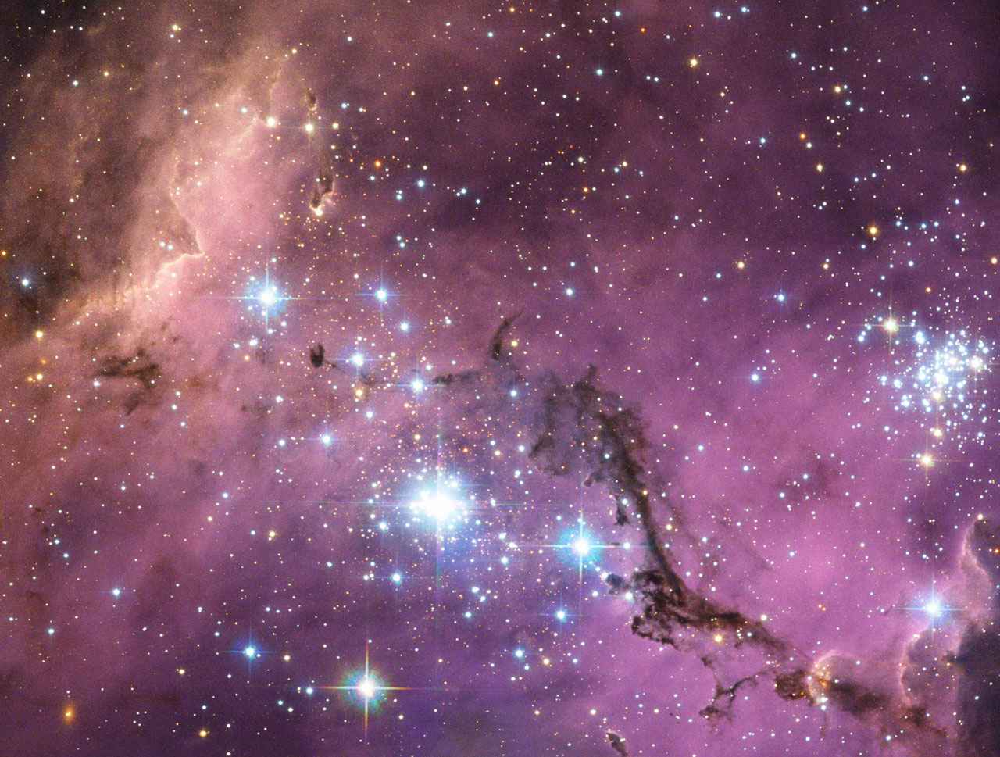
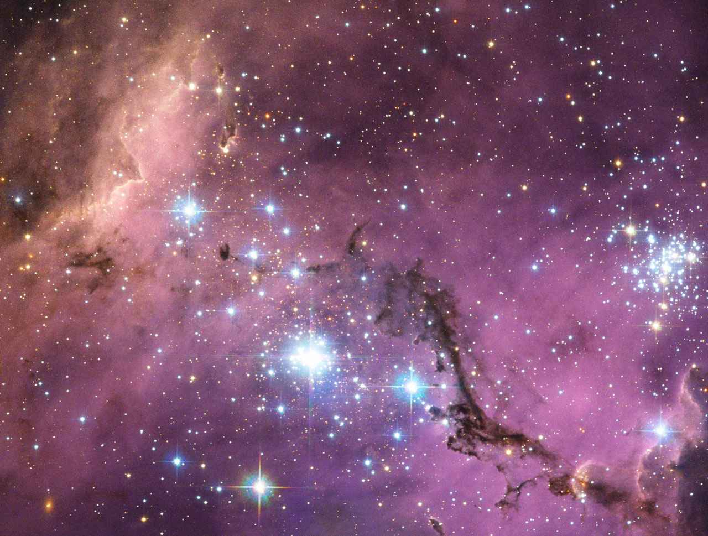

Spiral
A spiral galaxy is a type of galaxy that is shaped like a spiral, as-per its name. The galaxy shown above is known as Messier 96, and is a more asymmetric sprial galaxy than most.
Enjoy learning about galaxies, their various types, and what makes them up
Create an account to stay up-to-date with any new galactic news.
A spiral galaxy is a type of galaxy that is shaped like a spiral, as-per its name. The galaxy shown above is known as Messier 96, and is a more asymmetric sprial galaxy than most.
A barred spiral galaxy is very similar to a spiral galaxy with the only difference being its center is shaped like a bar. Our galaxy, the Milky Way, is an example of one of these galaxies.
An elliptical galaxy is a galaxy that, true to its name, is shaped like an ellipse or an oval. The pictured galaxy, the Sombrero Galaxy, is one example of this type of galaxy out there.

Irregular galaxies don't fit within the standards for defining galaxies and can be best compared to a cluster of stars pulled together into a galaxy by gravity, such as the galaxy IC 559 pictured above.
Stars are the lifeblood of our universe. They are the twinkling dots you see in the sky at night, and it's from them that we get all of the elements required for life.
Nebulae are clouds of dust found throughout our universe that serve as breeding grounds for new stars. The nebula seen in this image is the Ghost Head nebula.
A star cluster is simply just a group of stars clustered together, most commonly due to them all being born from the same nebula. There are two main types of star clusters based on how they're arranged; globular and open.

Black holes are points in space where gravity wins over any expansion force, creating a space where everything, even light, cannot escape from. Because of this, it is incredibly difficult to impossible to capture an image of a black hole.
NGC 300 is a spiral galaxy located about seven million light-years from us. It has all the telltale signs of a classic spiral galaxy and has lots of star formation still happening in it as evidenced by the amount of blue stars in it. It is located in the constellation Sculptor, which is a constallation in the southern sky that lies just west of Aquarius.
 

The Local System is the group of galaxies that we exist in. The three most prominant galaxies in our local system are shown above -- in order, it's the Small Magellanic Cloud, the Andromeda Galaxy, and the Large Magellanic Cloud -- and many other galaxies, most of which being dwarf galaxies.
Our knowledge of what lies beyond what we can see would be nowhere near as extensive as it is now without tools we've used to find new, interesting objects in space. Ground-based telescopes are helpful on a ground level, but they aren't powerful enough to detect everything we know is out there. That's where space telescopes come in, which are devices created on Earth and sent up into space to gather images we would have no chance of seeing on Earth and send them back to us to analyze and make sense of. The two most well-known space telescopes are the Hubble Space Telescope and the James Webb Space Telescope, both of which have greatly increased our knowledge of the cosmos. The James Webb Space Telescope is the most recent of these crafts sent out, and the images it's recorded have already done wonders to our understanding of how the universe and other galaxies work.
Below is an image of the galactic cluster SMACS 0723 captured by the James Webb Space Telescope. Compared to the space telescopes we've used before, the images from this space telescope are clear enough to make out stellar objects we couldn't have even dreamed of being able to see before.